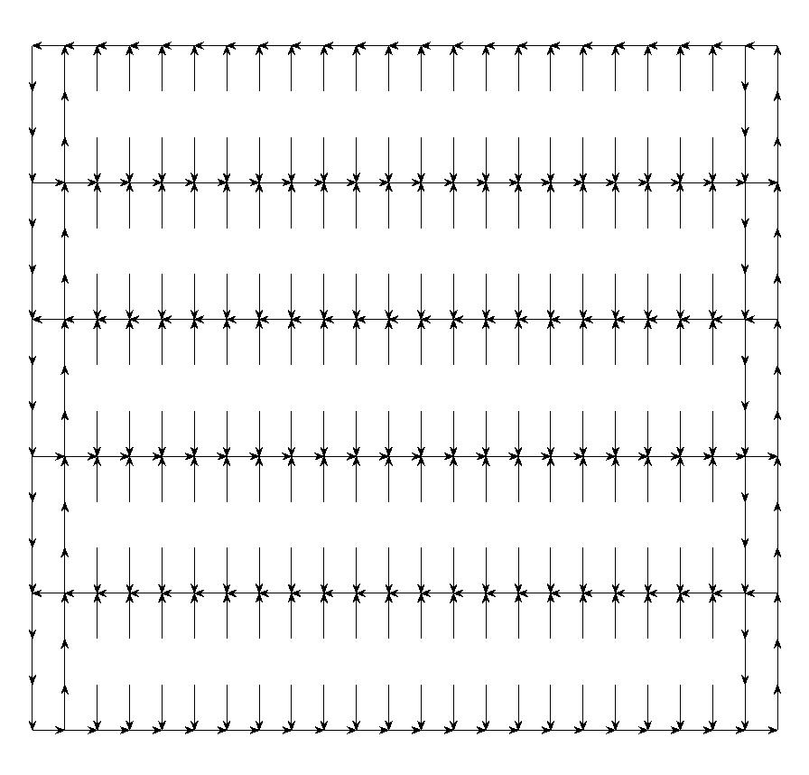
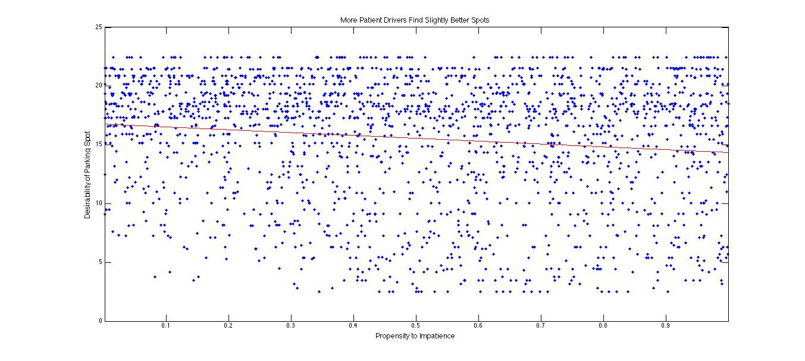
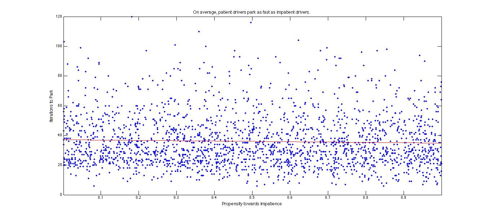
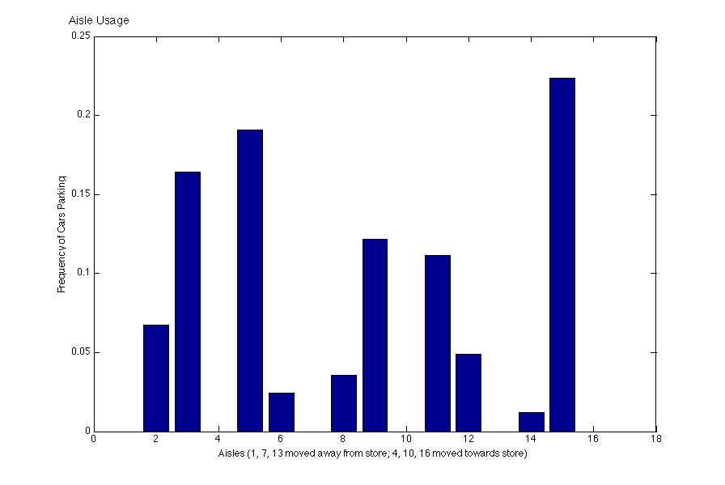

SFI Graduate Workshop - Homework Problem 2007
"My space"
Chris Cameron and Robi Ragan
The Space
The model space is a 24 x 16 cell space. Each cell is either a parking
spot or a lane. There are 100 parking spaces in the lot. The spots are
organized into 5 aisles two spaces wide which are perpendicular to the
mall. Between each isle there is a one-way lane. At the top of the
aisles, running parallel to the mall, there are two lanes (one going
each way). Likewise at the bottom of the aisles there are two lanes
running each way (also parallel to the mall). Each parking
spot is assigned a valued Vs based on its cartesian distance from the
front door of the mall. If a space is occupied by a car then Vs=0 The
cars use this value in their decision rule.
The Cars
Cars queue to enter the model according to a Poisson distribution. The
cars then enter the back lane and proceed until they reach the
intersection with the closest of the three middle lanes. If there are
open spots within their search radius then they turn down that
lane. Each car is generated with two exogenous parameters.
The first is an impatience parameter αi which is drawn from the uniform [0,1]. The higher an
agent's αi the more likely the agent is to accept a space as time
goes by. The second parameter is a taste parameter which represents how
important it is to an agent that they park close to the entrance of the
mall. The taste parameter is Ri is drawn from a normal distribution with mean 10 and standard deviation of 2.5. The higher this parameter
the more the agent values close parking spots. A third parameter unique
to each agent is ti, the time that the agent has been on the model
space. These parameters combine to form the agents
reservation value: rit = Ri-tiαi. The car searches the two spaces on it's right
and left as well as the four spaces in front of each of those two (a
total of 10 spaces). The car compares the Vs of all of these spaces
and if one of the spaces adjacent to it is the maximum Vs in the set
searched (the V*s)then the car parks if and only if:
V*s >= rit.
Otherwise the car will move forward in the lane one cell (if that cell
is unoccupied). If a car reaches the end of a lane without
parking then they choose to go right or left based on a 50/50
probability.
The Results
Exploring the full range of outcomes of this model can produce is not
really feasible for a 3 day project. The graphs relate to the
question of "the secret". TrafficFlow is the lane structure. Cars
enter on the lower right and want to be as close to the center left as
possible. Note that the empty spaces are where cars "park" not
drive. AisleUsage shows how agents park with no lane bias (a
random choice at each junction). AvsDist is a scatterplot of the
desirability of the parking spot obtained by people with different
alpha values. Here patience helps. AvsTime is a scatterplot of
the desirability of the parking spot obtained by people with different
alpha values. Here patience does not make a difference.




The Future Directions and Questions
The model above could be extended in several ways. Many of the
assumptions made could be changed or endogenized. For example the
current model assumes that there is only one entrance to the mall. We
could assume something about the spatial location of the stores in the
mall and include several entrances. The agents may have preference over
the stores and may seek to minimize the distance they park from their
preferred store. The design of the parking lot itself could be changed
in several ways. First the number of aisles could be chanced as well as
the number or spaces per aisle. The spaces could be split into two sub
lots as is seen at many shopping centers. Additionally details such as
handicap parking could be included.
The Social
Science Scenarios
1. Agents
looking for a place to sit on the beach. The model space is different
however the agents would face a similar decision. They want to be close
to the water however the longer they search to worse off they are. Just
as in the above model the agents could have heterogeneous reservation
values rit = Ri-tiαi.
2. Parishioners
searching for a parking spot at their church. The model differs in that
that the agents arrive and leave at roughly the same time.
3. Applying to graduation.